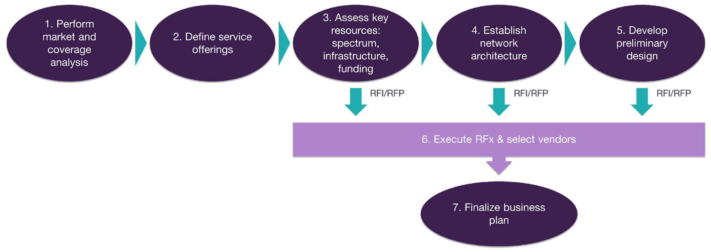

The Tribal Journey toward broadband connectivity
This playbook aims to support Tribal Land members, representatives, and leaders in their efforts to launch a fixed wireless network ("the Network") and organization to offer broadband services across their lands.
A fixed wireless network consists of a set of base stations that provide wireless connectivity to equipment installed at customer premises (e.g., houses, businesses, institutions). In turn, base stations connect via a backhaul link to a core site where a high-speed internet connection exists. The organization that manages the network is often called a wireless internet service provider (WISP).
Deployment of a fixed wireless network requires significant investment and effort, that's why it's essential to develop a business plan. The business plan will contribute to align the efforts across your team, seek acceptance from tribal authorities, obtain grants, and define a plan of action.
To generate your business plan, this playbook will guide you through the so-called "Tribal Journey" shown in Figure 1. Each tribal land journey toward broadband connectivity may be slightly different, based on skills, expertise, budget, timeframes, preferences, strategy, and other requirements.
This playbook aims to guide you and provide you with the required knowledge and tools to complete your journey in a simple and smooth way. Along this journey the outputs of each step can be integrated into the Business Plan template or just gathered for final integration in step 7.

Figure 1 — The Tribal Land Journey toward broadband connectivity.
Below, the steps of the journey are briefly described:
Step 1. Perform market and coverage analysis
Assess the current situation in the areas of interest within your tribal land, identifying the connectivity needs and opportunities as well as the service offering from large carriers and local ISPs.
Based on this analysis, establish target areas and sites to be covered by your Network; then, obtain data regarding population and housing units within the target areas.
This step is one of the pillars to develop an effective business plan; everything else will part of the analysis of target areas and connectivity needs.
In this step, the playbook will provide you with the necessary guidance and the Tribal Mapping tool to execute the associated tasks.
Step 2. Define service offerings
Based on the findings from the previous step and your own strategy, define the types of services — residential, business, institutional — and speeds to be offered by your Network. For each service, establish the price and any subsidies that will be provided to your customers.
In addition to services, this step considers the establishment of the sales and marketing strategy. Here you will define how your subscribers can contract and pay for the network services and how to promote adoption of them.
This is an important milestone that provides inputs for the network design and financial analysis.
Step 3. Assess key resources
Collect data regarding critical resources for the Network deployment and operation, including spectrum, telecom infrastructure, and funds. Collected data is used to identify resources that must be acquired. In particular, data from sites that can be used to install equipment (e.g., telecom towers, buildings, water towers, silos) is utilized as one of the inputs for network design.
After this step, you may decide to engage with vendors through the RFx Process in step 6 or continue toward network architecture definition in step 4.
The playbook includes a data collection kit and framework to gather and register data of potential network sites.
Step 4. Establish network architecture
Assess technology and architectural options to select the architecture to be implemented in your Network based on cost, feasibility, operational constraints, and preferences. Establishing the architecture provides clarity to all stakeholders on how the Network should look like, guiding the design and selection of potential equipment vendors.
After this step, you may decide to engage with vendors through the RFx Process in step 6 or continue in the journey to develop a preliminary network design in step 5.
This step includes the necessary background and instructions to generate the reference architecture description for your Network through the Network Architecture wizard, based on coverage targets from step 1 and spectrum strategy from step 3.
Step 5. Develop preliminary design
This is an optional step since, in most cases, consultants or vendors will develop the preliminary or high-level design for your Network. Moreover, it requires an additional level of effort and execution of technical procedures.
To develop the preliminary design, you will take outcomes of previous steps: coverage targets, services to be supported, site infrastructure, spectrum, and network architecture. This data is used to obtain the required number of network sites, network topology, and the necessary network equipment, along with an estimate of the covered population.
An efficient network design will ensure adequate coverage and capacity to support the service offering while optimizing the budget.
This step is supported through step-by-step instructions, tools, and examples to develop your own design.
After this step, you may decide to engage with vendors through the RFx process in step 6. Other alternative is to use the Tech Solutions Matrix to identify suitable network equipment for your Network and obtain budgetary pricing, passing directly to the financial plan in step 7.
Step 6. Execute RFx and select vendors
RFx is a generic term to denote a procurement method in which the buyer — in this case, your Tribal Land — engages with vendors to assess their products and services, before entering into commercial agreements.
It can refer to a request for information (RFI), request for proposal (RFP), or request for quotation (RFQ). The value of the RFx process lies in the opportunity to obtain industry knowledge and best-in-breed offerings at competitive prices.
In this step, you will perform and manage the RFx process, supported by a series of instructions and templates pre-filled with the necessary data to engage with relevant vendors to deploy your Network.
As stated before, you can enter the RFx process at various steps. This will depend on your strategy and how far you want to get in the journey before vendors' engagement begins.
This playbook guides you on managing the RFx process, including when and how to use the RFI, RFP, and RFQ templates.
Step 7. Finalize your business plan
Define the operating model, project plan, and financial plan based on the outcomes from previous steps.
The operating model includes the main activities to manage, operate, and maintain your Network and the team/organization's structure in charge of it.
The project plan provides an overview of the tasks to be performed to stand-up and commence the Network's operation, showing timelines and responsible parties to execute each task.
The financial plan shows details regarding capital expenditures (CAPEX), operational expenditures (OPEX), and revenue based on network design and service offering. Then, cash flows and financial metrics are obtained. Generating the financial plan is essential to obtain grants and other funding types since this analysis shows how the business case for the Network will evolve over time.
The necessary guidance and tools to perform this critical step are provided in this playbook, including a customizable financial plan template to generate the financial analysis.
The rest of the playbook provides detailed instructions to perform each of the steps. As you go through each step, keep in mind that the journey is flexible, and you should adapt the steps according to your own requirements and conditions.